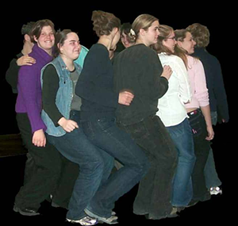

Unit
One - Introduction to Drama Module
1: Basic Skills Lesson 1 - Trust
Introduction:
Trust activities are designed to help all actors develop relationships
within their acting group. These activities create physical trust
in others, strengthen communication skills, and enable us all
to learn to relinquish control.
Objectives:
- to act responsibly toward other members of the class
- to feel secure in the class
- to share responses with other students
- to identify the class environment as a safe place to take risks
Resources: Blindfolds, moveable objects in a room, talking circle object
Activity
1 - Falls:
Students should form groups of two, with both people approximately
the same size and weight. A stands directly in front of
B, and both A and B face forwards. A will
fall backwards and B will catch A. B should keep
his or her hands ready to catch A and brace well. At first,
A should stand very close to B, so that it is easy for
the catching to occur. As confidence and trust increase, A
and B should be able to create larger and larger falls. Students
should switch roles when they have completed the exercise. (5 min.)
Activity
2 - Human Chain (Knots):
Students form a circle of up to eight people (the more the better
up to this point). They reach across the circle to grab the hands
of two other students. No student may hold the hand of a student beside
himself or herself. All students must be holding hands. Now the tangle
must unravel itself into a circle again, but it must do so with no
verbal communication. (5 min.)
Students
with back problems should not attempt supports.
Activity
3 - Supports:
Students
should form groups of two, with both people approximately the same
size and weight. A
and B stand back to back, with
A bending his or her knees slightly, so that A's bottom
is below B's. A and B link arms at the elbow
and A bends at the waist slowly. When A is bent 90 degrees,
and B is balanced well, they slowly let their arms go. B
should be laying balanced on A's back. This position should
be held for 15 seconds, then A and B link arms again,
and B is lowered gently back to the floor, reversing the original
lift. Students
should switch roles when they have completed the exercise.
(2 min.)
Activity
4 - Chair Sit:
All the students in a location perform the chair sit as a group.
One student starts by pretending to sit on a chair. The upper body
is straight, but the waist and knees are bent 90 degrees. Students
add on in front of and behind the original student, repeating the
posture, so that eventually the entire group will be a big circle
of students sitting on each other's legs. Each individual in the
group supports the others, so no one is strained and no one falls.
(5 min.)
Try
having your group expand and contract the chair and discuss
the results. Discuss what happens if one individual is removed,
or if several are. Use these changes as an analogy to discuss
drama as a group process.
Photograph
by Kurtis Hamel.

Activity
5 - Blind Walk:
Students choose a partner they have not yet worked with (if possible),
and label themselves A and B. The Bs go out
into the hallway and put on the blindfolds. The As rearrange
the space so that there are many safe objects to interact with,
but the Bs cannot anticipate where the objects will be placed.
Each A then goes into the hallway and returns holding the
hands of his or her partner. This can be a very scary way to relinquish
control, so A must be very careful to ensure that B
is never hurt. The space is explored for two minutes by all the
partners simultaneously. Then the blindfold is removed and students
debrief with their partners for a minute.
A and B agree on a shared word. It can be anything
school appropriate, but no two groups should have the same word.
The As go into to the hallway and put on the blindfolds.
The Bs rearrange the space. When the Bs go to get
the As, they do not hold hands. Instead, they stand directly
in front of their partners and use the shared word to call them.
They may discuss how the pitch or pace of that word will mean different
things (for example, "When I say Fred really quickly that means
stop right now"). However, once they get into the classroom,
the pairs may only use the shared word. The space is explored for
two minutes by all the partners simultaneously. Then the blindfold
is removed and students debrief with their partners for a minute.
(20 min).
Reflecting:
When all trust activities are completed, join together as a
large group and conduct a talking
circle. The students sit in a circle. An object is
chosen to symbolize permission to talk. The students talk only
when they are requesting the object or holding the object. Use
the circle to discuss how the activity went and how successfully
students were able to trust their partners. (time depends on
class size)
When
the circle is complete, the student should write a journal on
the following topics. How easy is it for you to trust? Why
do you find it easy or difficult to trust? What conditions have
to be met for you to give trust? The journal article should
be a minimum of 1/2 a page in length. (5 to 10 min.)
Talking
Circle is the cornerstone of open communication in a drama
.
Evaluation:
The student evaluates personal progress through reflection (journal,
talking circle).
On-line
Activity Alternatives: Trust activities, with the exception
of the chair sit, may be performed by groups as small as two in
the remote location. Discussion during talking circle could occur
through a secure, threaded discussion over the period of a week,
and journal entries could be e-mailed or faxed to the teacher.